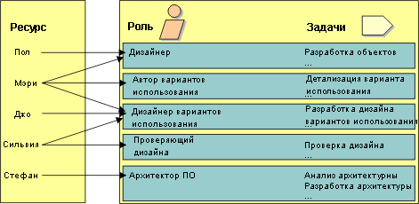

|
Роль определяет поведение и обязанности сотрудника или группы совместно работающих сотрудников в контексте организации.
Поведение каждой роли определено набором задач. Обязанности каждой роли обычно определяются относительно определенных
рабочих продуктов, таких как документы, например. В качестве примеров ролей можно привести проектировщика, разработчика
программного обеспечения и рецензента. Посредством связанного набора задач роль также неявно определяет
компетенцию.
Учтите, что роли - это не сотрудники. Роли описывают поведение сотрудников и их обязанности.
Обычно проект имеет в своем распоряжении некоторое число ресурсов, т.е. сотрудников с определенными
компетенциями. Например, Джон, Мария, Пол и Сильвия являются сотрудниками с различными, хотя и перекрывающими друг
друга компетенциями. С помощью определенных ранее ролей установите соответствие доступных ресурсов проекта и ролей,
которые они могут исполнять.

Связи сотрудников и ролей меняются со временем, в зависимости от этапа жизненного цикла проекта и выполняемой работы.
-
Сотрудник может исполнять несколько ролей в один день. Например, Сильвия может быть Рецензентом утром и
проектировщиком вариантов использования во второй половине дня.
-
Сотрудник может исполнять несколько ролей одновременно. Например, Джон может быть Разработчиком программного
обеспечения и Проектировщиком определенного класса, а также Владельцем пакета, содержащего этот класс.
-
Несколько людей могут исполнять одну и ту же роль, выполняя определенную задачу вместе, действуя как команда.
Например, Пол и Мария могут вместе быть Проектировщиками одного варианта использования.
Попытайтесь распределить обязанности таким образом, чтобы рабочие продукты редко переходили от одного ресурса к
другому. Позвольте проектировать и реализовывать подсистему одному человеку или команде, чтобы им не приходилось
повторно изучать работу, сделанную другими.
Когда одна и та же команда проектирует и реализовывает подсистему, переход от проектирования к реализации происходит
плавно. Кроме того, это развивает проектировщиков: когда они видят, что работает, а что нет, они лучше понимают суть
хорошего проекта и используют это в своей будущей работе. Подобно скульптору, хороший проектировщик должен понимать
среду выражения, которой для программного обеспечения является среда реализации.
|